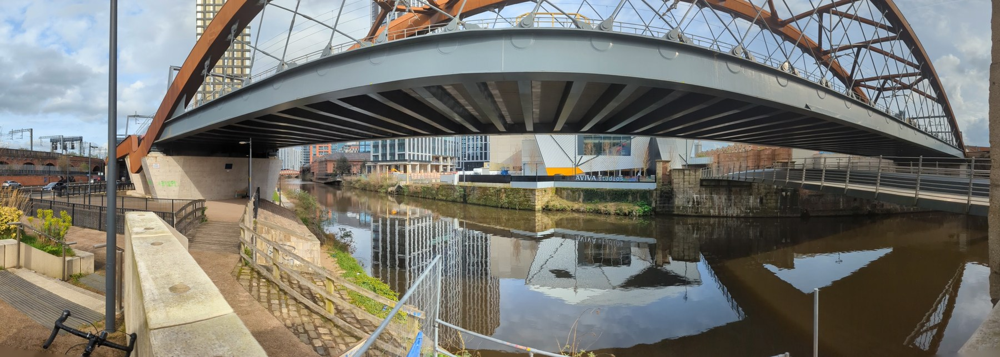
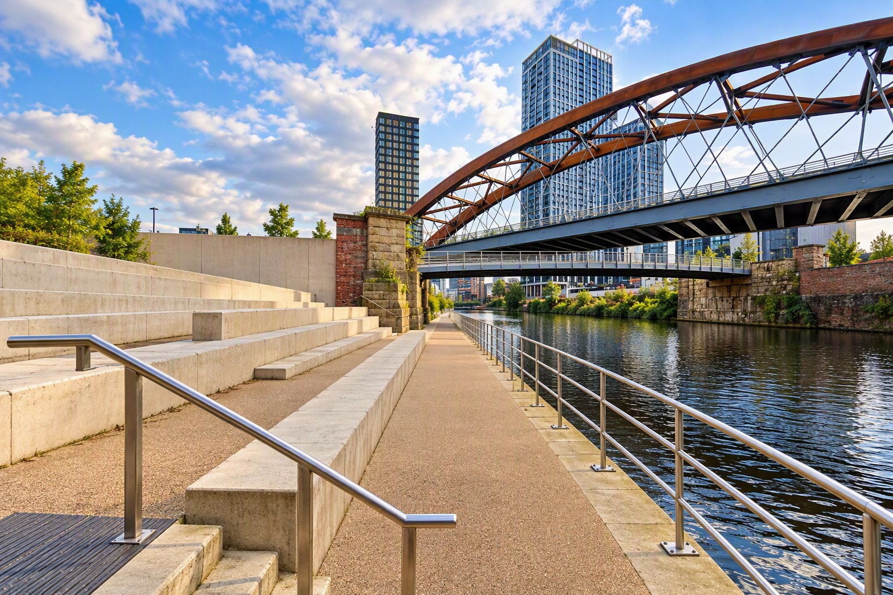

Access and booking
Know what to expect before you book
A short, easy-paced riverside walk, immersive audio and a seated musical finale. Here are the details to help you plan with confidence.
When and where
Saturday 19, Sunday 20 and Monday 21 December 2026, with experiences starting at 10:30 and 13:30.
Meet at the riverside entrance of Aviva Studios, Water Street, Manchester M3 4JG. Please arrive 20 minutes before your booked start time. Your hosts will welcome you and help you gather inside The Social before the walk.
Allow around 90 minutes in total for arrival, the experience and departure. The experience itself is about 65 minutes: around 50 minutes walking, followed by a 15-minute seated musical finale.
Route and access
- Approximately a quarter-mile route, at an easy pace.
- The route is step-free and follows maintained pedestrian paths.
- The walk crosses from Manchester into Salford and finishes beside the river.
- Seating is available for the finale; wheelchair users may remain in their own chair.
- Wireless headphones are provided. No phone, app or personal headphones are needed.
- Singing along is optional; listening is just as welcome.
If you have a question about access or would like to discuss what to expect, email contact@mancunianity.uk before booking.
Plan your visit
Your visit, step by step
A simple guide to arriving, listening and enjoying the riverside finale. The headphone visuals are illustrative; the venue and route photographs show the actual locations.
-
Step 1
Arrive at Aviva Studios
Meet at the riverside entrance of Aviva Studios, Water Street, Manchester M3 4JG. Please arrive 20 minutes before your booked start time.

Aviva Studios beside the River Irwell. -
Step 2
Meet your event team
Your welcome hosts will greet you, help you get settled and explain what to expect before the group sets off.
-
Step 3
Receive and test your headset
Wireless headphones are provided. No phone, app or personal headphones are needed.
Illustrative headphone-walk visual. Illustrative family-listening visual. -
Step 4
Follow the River Irwell
Walk at an easy pace along the riverside route, listening to stories and sounds. The route crosses from Manchester into Salford.

The River Irwell and the Ordsall Chord. -
Step 5
Reach the finale beside the Ordsall Chord
The walk finishes beside the river at the stone steps opposite Aviva Studios.

The stone steps beside the Ordsall Chord. -
Step 6
Settle in for the musical finale
Enjoy a 15-minute live musical finale. Singing is optional; you are welcome to listen. Wheelchair users may remain in their own chair.
Seating for the riverside finale.
Tickets and age guidance
- Adult: £15
- Children aged over 3 and up to 17: £5
- Family ticket (two adults and two children aged over 3 and up to 17): £38
- Children aged 3 and under: free; a free ticket is required
- Senior aged 65+: £12
- Access companion: free
For safety and accurate attendance numbers, every child must be included in your booking. Please add a free ticket for each child aged 3 and under, and book a £5 child ticket for each child over 3 and up to 17. The experience is expected to work particularly well for ages 8+, while younger children are welcome with their adults. Children must be accompanied by a responsible adult.
A cosy winter outing
Meet at the riverside entrance of Aviva Studios 20 minutes before setting off. Your hosts will welcome you and help you gather inside the warm, step-free Social before the walk. Then take a gentle, easy-paced 400-metre riverside stroll and return to Aviva Studios after the finale for indoor warmth and refreshments.
Wear warm layers, waterproof clothing and comfortable footwear for Manchester in December. A small waterproof sit-mat or cushion is optional for extra comfort during the seated finale.
Severe weather or unsafe river conditions may require a change, postponement or cancellation. If plans change, booked visitors will be contacted using the details supplied at booking.
Ready to follow the river?
Choose from six experiences on 19, 20 and 21 December 2026.